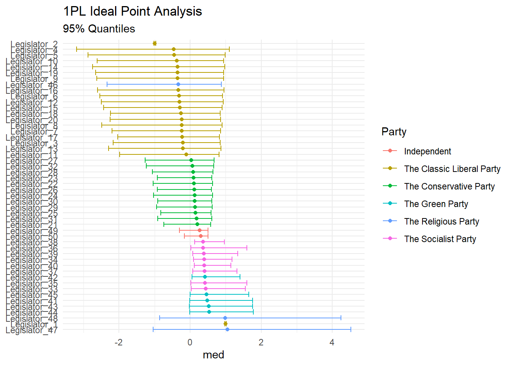

Ideal Point Modeling is useful when assessing political behaviour. I’m going to copy and explore the analysis that was developed by Robert Myles.
Below is some of the data that was generated for simulation within a multiparty system. This is just a starting point.
library(dplyr)
set.seed(1834)
# simulate data: 100 legislators, 150 votes
N <- 50
M <- 150
m_votes <- matrix(NA, nrow = N, ncol = M)
# Liberals (majority Gov. party)
for(n in 1:20){
m_votes[n, ] <- rbinom(M, size = 1, prob = 0.9)
}
# Conservatives (uneasy coalition)
for(n in 21:32){
m_votes[n, ] <- rbinom(M, size = 1, prob = 0.7)
}
# Socialists (opposition)
for(n in 33:40){
m_votes[n, ] <- rbinom(M, size = 1, prob = 0.3)
}
# Greens (opposition)
for(n in 41:45){
m_votes[n, ] <- rbinom(M, size = 1, prob = 0.25)
}
# Religious (opposition)
for(n in 46:48){
m_votes[n, ] <- rbinom(M, size = 1, prob = 0.01)
}
# Independents (random)
for(n in 49:50){
m_votes[n, ] <- rbinom(M, size = 1, prob = 0.5)
}
rm(n)
votes_data <- data_frame(
vote_id = rep(paste0("Vote_", 1:M), each = N),
legislator_id = rep(1:N, times = M),
vote = as.vector(m_votes),
legislator_party = ""
) %>%
mutate(legislator_party = case_when(
legislator_id <= 20 ~ "The Classic Liberal Party",
legislator_id > 20 & legislator_id <= 32 ~ "The Conservative Party",
legislator_id > 32 & legislator_id <= 40 ~ "The Socialist Party",
legislator_id > 40 & legislator_id <= 45 ~ "The Green Party",
legislator_id > 45 & legislator_id <= 48 ~ "The Religious Party",
TRUE ~ "Independent"),
legislator_id = paste0("Legislator_", legislator_id),
government = ifelse(legislator_party %in% c("The Classic Liberal Party",
"The Conservative Party"),
"Government", "Opposition"),
index = gsub("[A-Za-z_]*", "", vote_id),
index = as.numeric(index),
year = ifelse(index <= 75, "2017", "2018")) %>%
dplyr::select(-index)
dimnames(m_votes)[[1]] <- unique(votes_data$legislator_id)
dimnames(m_votes)[[2]] <- unique(votes_data$vote_id)
# make the first two voters roughly opposite:
# put voter from religious party in 2nd row
religious <- m_votes[46, ]
liberal <- m_votes[2, ]
m_votes[2, ] <- religious
m_votes[46, ] <- liberal
dimnames(m_votes)[[1]][2] <- "Legislator_46"
dimnames(m_votes)[[1]][46] <- "Legislator_2"
# and make a random subset NA (missed votes, common in real datasets):
m_votes[sample(seq(m_votes), 50)] <- NAAs with all 1- Dimensional Item Response Models the suggested form is:
\[y_i \sim bernouilli(invlog(\theta_j*\beta_k -\alpha_k))\] Where j represents the individual legislators, voting on k bills. In this model _j represents the latent ability of the indivudal legislator. One important component here is that IRT and specifically ideal point can be scale invariable. Gelman and Hill (2006) details this issue, but the idea is that the algorithms will generate the ideal point, but without an anchor the direction is uncertain. Gelman gets around this in an analysis of the US Supreme court by anchoring Scalia as the most conservative justice. In this example you can see that the for legistlators 1 and 2 are put into opposition. This is exactly to provide an anchoring of sorts.
data {
int<lower=1> J; //Legislators
int<lower=1> K; //Proposals/bills
int<lower=1> N; //no. of observations
int<lower=1, upper=J> j[N]; //Legislator for observation n
int<lower=1, upper=K> k[N]; //proposal for observation n
int<lower=0, upper=1> y[N]; //vote of observation n
}
parameters {
vector[K] alpha;
vector[K] beta;
vector[J] theta;
}
model {
//priors on parameters
alpha ~ normal(0,10);
beta ~ normal(0,10);
theta ~ normal(0,1);
theta[1] ~ normal(1, .01); //constraints
theta[2] ~ normal(-1, .01); //Important for identifiability problem
for (n in 1:N)
y[n] ~ bernoulli_logit(theta[j[n]] * beta[k[n]] - alpha[k[n]]);
}
library(rstan)
rstan_options(auto_write = TRUE)
id_fit <- stan_model("stan_ideal_point.stan")Now we can prep the data removing the NA values from our data.
# take out NA:
nas <- which(is.na(m_votes))
votes <- m_votes[-nas]
N <- length(votes)
j <- rep(1:50, times = 150)
j <- j[-nas]
k <- rep(1:150, each = 50)
k <- k[-nas]
J <- max(j)
K <- max(k)
data <- list(J = J, K = K, N = N, j = j, k = k, y = votes)Now we can fit the model:
fit <- sampling(id_fit,
data = data, iter = 4000,
chains = 2, cores = 2, refresh = 0)Let’s check out the latent trait for our legislators:
print(fit, pars = "theta")## Inference for Stan model: stan_ideal_point.
## 2 chains, each with iter=4000; warmup=2000; thin=1;
## post-warmup draws per chain=2000, total post-warmup draws=4000.
##
## mean se_mean sd 2.5% 25% 50% 75% 98% n_eff Rhat
## theta[1] 1.00 0.00 0.01 0.97 0.99 1.00 1.00 1.01 6215 1
## theta[2] -1.00 0.00 0.01 -1.02 -1.01 -1.00 -0.99 -0.98 6809 1
## theta[3] 0.71 0.00 0.08 0.54 0.65 0.71 0.76 0.87 307 1
## theta[4] 0.91 0.00 0.11 0.71 0.84 0.90 0.97 1.12 688 1
## theta[5] 0.83 0.00 0.10 0.65 0.77 0.83 0.90 1.03 469 1
## theta[6] 0.79 0.00 0.09 0.61 0.73 0.79 0.85 0.98 400 1
## theta[7] 0.72 0.00 0.08 0.55 0.66 0.71 0.77 0.88 327 1
## theta[8] 0.75 0.00 0.09 0.58 0.69 0.75 0.81 0.92 355 1
## theta[9] 0.79 0.00 0.09 0.61 0.72 0.78 0.85 0.97 408 1
## theta[10] 0.79 0.00 0.09 0.62 0.73 0.79 0.85 0.98 385 1
## theta[11] 0.68 0.00 0.08 0.52 0.63 0.68 0.73 0.84 316 1
## theta[12] 0.79 0.00 0.09 0.62 0.72 0.79 0.85 0.97 398 1
## theta[13] 0.73 0.00 0.08 0.57 0.67 0.73 0.78 0.89 314 1
## theta[14] 0.80 0.00 0.09 0.62 0.74 0.80 0.87 0.99 433 1
## theta[15] 0.75 0.00 0.09 0.59 0.69 0.75 0.81 0.92 367 1
## theta[16] 0.80 0.00 0.09 0.62 0.74 0.80 0.86 0.98 427 1
## theta[17] 0.70 0.00 0.08 0.54 0.64 0.70 0.75 0.86 290 1
## theta[18] 0.71 0.00 0.08 0.54 0.65 0.70 0.76 0.87 322 1
## theta[19] 0.77 0.00 0.09 0.60 0.71 0.76 0.83 0.95 394 1
## theta[20] 0.72 0.00 0.09 0.55 0.66 0.71 0.77 0.88 306 1
## theta[21] 0.46 0.01 0.07 0.31 0.41 0.46 0.51 0.60 208 1
## theta[22] 0.50 0.01 0.07 0.35 0.45 0.49 0.55 0.65 201 1
## theta[23] 0.49 0.00 0.07 0.35 0.44 0.49 0.53 0.64 225 1
## theta[24] 0.51 0.00 0.07 0.37 0.46 0.51 0.56 0.66 227 1
## theta[25] 0.47 0.01 0.07 0.33 0.42 0.47 0.52 0.62 214 1
## theta[26] 0.48 0.01 0.07 0.34 0.43 0.48 0.53 0.63 214 1
## theta[27] 0.55 0.00 0.08 0.40 0.50 0.54 0.60 0.70 240 1
## theta[28] 0.52 0.00 0.07 0.37 0.47 0.52 0.57 0.67 235 1
## theta[29] 0.49 0.00 0.07 0.35 0.44 0.49 0.54 0.64 223 1
## theta[30] 0.49 0.00 0.07 0.35 0.44 0.49 0.54 0.64 215 1
## theta[31] 0.49 0.00 0.07 0.35 0.44 0.49 0.54 0.64 226 1
## theta[32] 0.54 0.00 0.07 0.39 0.49 0.54 0.59 0.69 229 1
## theta[33] 0.16 0.01 0.08 0.01 0.11 0.17 0.22 0.32 188 1
## theta[34] 0.23 0.01 0.08 0.08 0.18 0.23 0.28 0.38 195 1
## theta[35] 0.16 0.01 0.08 0.00 0.11 0.16 0.21 0.31 178 1
## theta[36] 0.15 0.01 0.08 -0.01 0.09 0.15 0.20 0.31 188 1
## theta[37] 0.20 0.01 0.08 0.05 0.15 0.20 0.25 0.35 177 1
## theta[38] 0.26 0.01 0.08 0.11 0.20 0.26 0.31 0.40 185 1
## theta[39] 0.21 0.01 0.08 0.05 0.16 0.21 0.26 0.35 182 1
## theta[40] 0.24 0.01 0.07 0.10 0.19 0.24 0.29 0.39 175 1
## theta[41] 0.13 0.01 0.08 -0.03 0.08 0.13 0.18 0.28 192 1
## theta[42] 0.19 0.01 0.08 0.03 0.13 0.19 0.24 0.34 180 1
## theta[43] 0.12 0.01 0.08 -0.04 0.07 0.12 0.18 0.28 194 1
## theta[44] 0.12 0.01 0.08 -0.04 0.07 0.12 0.18 0.28 188 1
## theta[45] 0.14 0.01 0.08 -0.02 0.09 0.14 0.20 0.30 174 1
## theta[46] 0.72 0.01 0.08 0.56 0.66 0.72 0.78 0.89 286 1
## theta[47] -0.64 0.01 0.23 -1.15 -0.77 -0.61 -0.47 -0.25 706 1
## theta[48] -0.57 0.01 0.20 -1.02 -0.68 -0.55 -0.43 -0.22 559 1
## theta[49] 0.38 0.01 0.07 0.24 0.33 0.38 0.43 0.53 188 1
## theta[50] 0.36 0.01 0.07 0.22 0.31 0.36 0.40 0.51 200 1
##
## Samples were drawn using NUTS(diag_e) at Thu Jun 20 10:46:15 2019.
## For each parameter, n_eff is a crude measure of effective sample size,
## and Rhat is the potential scale reduction factor on split chains (at
## convergence, Rhat=1).Let’s just extract the parameters from the model.
posterior <- rstan::extract(fit)[["theta"]]And graph them in the classic way (note that our anchors are diametrically opposed):
library(tidyverse, quietly = TRUE)
posterior %>%
as_data_frame() %>%
set_names(sprintf("Legislator_%s", 1:50)) %>%
gather(legislator_id, value) %>%
group_by(legislator_id) %>%
summarise(med = median(value),
q025 = quantile(value, 0.025),
q975 = quantile(value, 0.975)) %>%
left_join(votes_data %>% dplyr::select(legislator_id, legislator_party) %>% unique()) %>%
ggplot(aes(reorder(legislator_id, -med), color = legislator_party))+
geom_point(aes(y = med))+
geom_errorbar(aes(ymin = q025, ymax = q975))+
coord_flip()+
theme_minimal()+
labs(
title = "1PL Ideal Point Analysis",
subtitle = "95% Quantiles",
x = NULL,
color = "Party"
)## Warning: `as_data_frame()` is deprecated, use `as_tibble()` (but mind the new semantics).
## This warning is displayed once per session.## Joining, by = "legislator_id"
Gelman, Andrew, and Jennifer Hill. 2006. Applied Regression and Multilevel/Hierarchical Models. Cambridge University Press.
Research and Methods Resources
me.dewitt.jr@gmail.com
Winston- Salem, NC
Copyright © 2018 Michael DeWitt. All rights reserved.